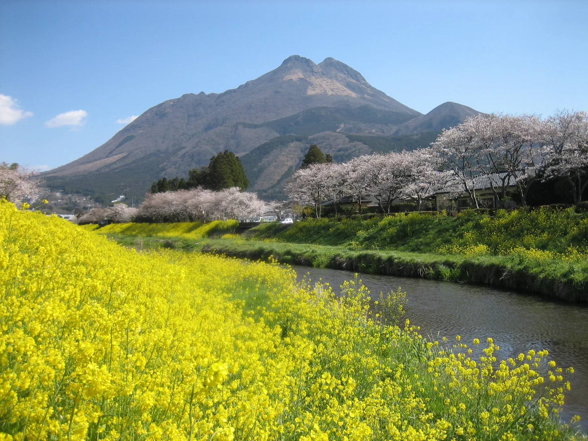
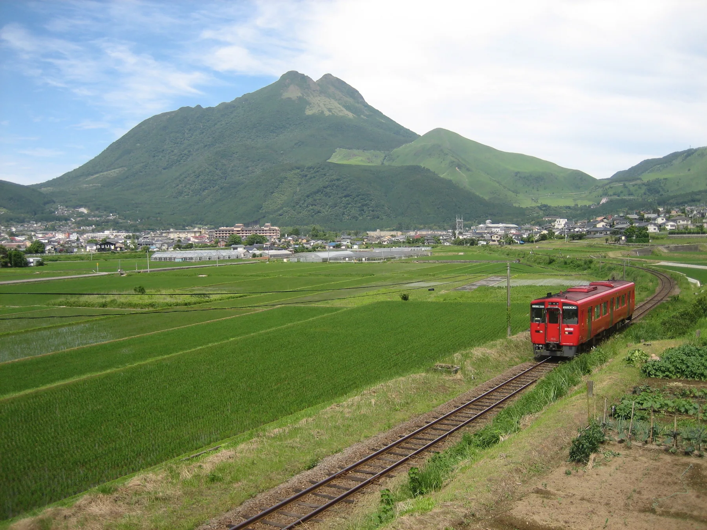
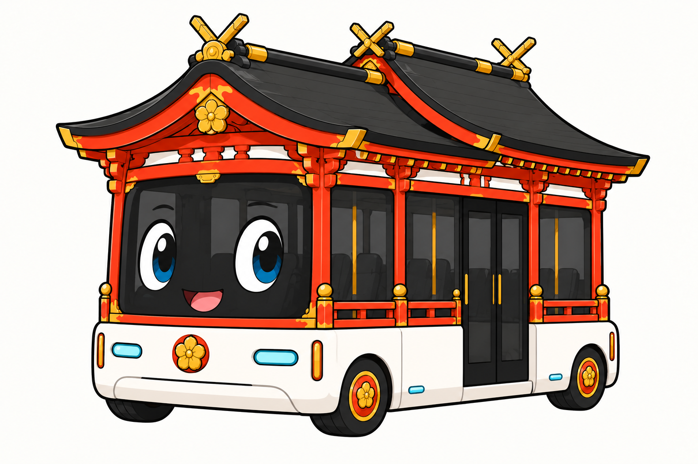
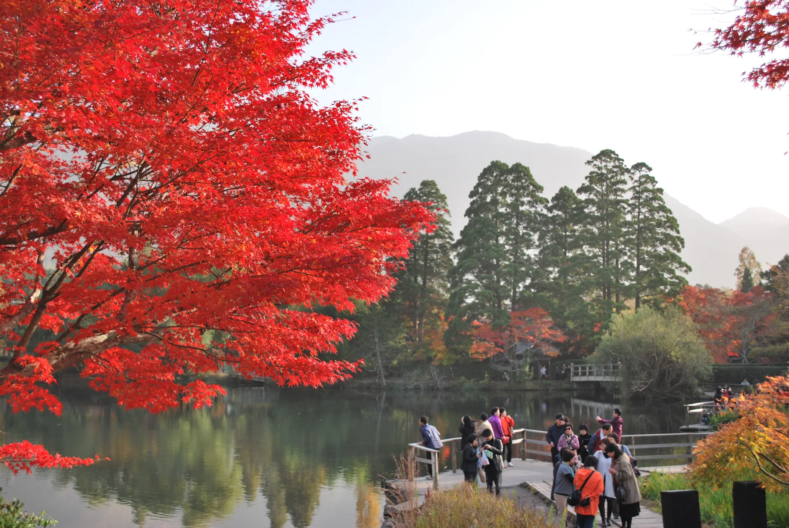
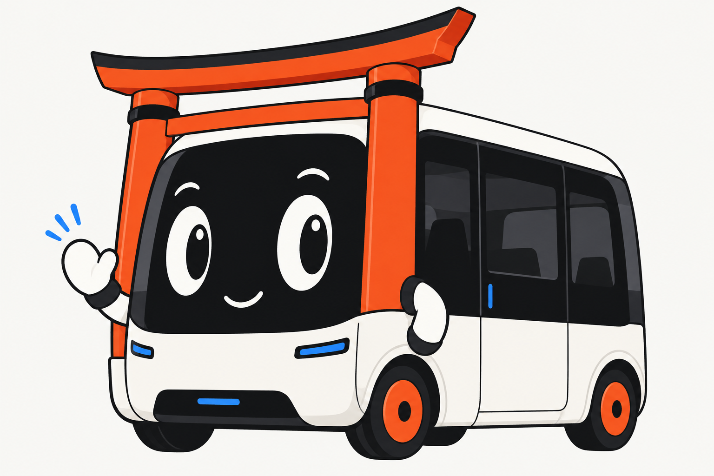
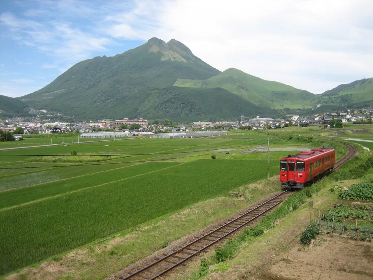
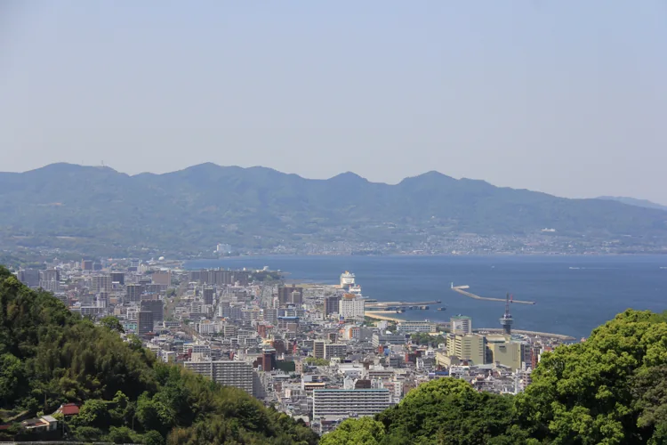

任意団体から、始める。
法人を新設せず、既存の企業・団体の強みを生かして活動します。

OITA / THE NEXT POSSIBILITY
01 VISION / 目指す未来
人口減少に向き合い、面白い仕事があり、新しい挑戦ができ、成長できる。大分で働き、稼ぎ、次の挑戦へ進める未来を目指します。

02 MISSION / 私たちの役割
大分県の重点政策と、企業・大学・地域の人材・技術・アイデアをつなぐ。モビリティを成長の基盤として、具体的な取組みを生み出します。成果を確かめ、各実施主体とともに継続する事業へ育てます。
03 VALUE / 大切にすること

地域の思いや課題、挑戦したいことを出発点にする。
分野や組織を越えて、人材・技術・知識・ネットワークを持ち寄る。
アイデアを具体的に試し、成果を確かめて、続く事業へ育てる。
所得・雇用・人材・知識を地域に残し、次の成長へ投資する。
設立基本案 Ver.1.0（協議用）の考え方を、Vision・Mission・Valueとして整理しています。
大分の可能性を、もっと。
MOBILITY = GROWTH INFRASTRUCTURE
地域企業の新規事業、起業、生産性向上、高付加価値化。大分で稼げる仕事を育てる。
大学・学生・企業・地域をつなぐ。県内外の若者が、大分で働く・起業する・関わる選択肢を増やす。
巡る・泊まる・食べる・買う・体験する。訪れた人の行動を、地域企業の売上や所得につなげる。
AI・データ・EV・自動運転・e-Palette・ドローン・空モビリティ・エネルギーを、新しい産業と仕事へ。
買物・医療・教育・仕事・交流へのアクセスを広げる。住み続けたい、帰ってきたいと思える地域へ。

PEOPLE, PLACE, POSSIBILITY.
人がつながる。
大分の可能性が、
動きだす。
地域の風景も、暮らしも、人の知恵も。
大分にある力を、次の挑戦へ。
FROM IDEAS TO LOCAL VALUE
コンソーシアムは、人と課題をつなぎ、事業を生む共通の場。具体的なプロジェクトは、最も適した企業・団体が担います。

地域の課題と
挑戦したいこと。
必要な仲間、
技術・サービス。
実施主体を決め、
動ける企画に。
個別プロジェクトで、
実行する。
成果を確かめ、
続く事業へ。
目指す成果は、大分に残る
所得・雇用・地域資産。蓄積した人材・知識・事業を、次の成長へつなげます。


全部に参加しなくていい。
あなたの「やりたい」から。
最初の形を、一緒につくる。
参加方法を読む ↗ 02関心のあるテーマに、力を持ち寄る。
参加方法を読む ↗ 03この案件なら。一緒に試す。
参加方法を読む ↗参加方法・受付開始時期・会費は、設立準備期間中に協議します。
地域を知る。移動を調べる。学びを実践へ。
大分の次の一歩を支える、4つのコンテンツ。
大分県イベントカレンダー
地域の催しを月別・テーマ別に探す。開催日や県の関わり、連携の接点を確認できます。

大分モビリティ・アトラス
市町村や現在地から、買物・通院などの往復候補を検索。公開時刻表を使ったデモです。

交通データ・アクセシビリティ分析
バスの運行、移動のしやすさ、地域の送迎を確認。条件を変えながら、改善の手がかりを探せます。
モビリティ人材育成・交通空白解消
全国の交通空白解消・人材育成の事例と、大分での対話・学び・実証の記録をたどれます。
提供・更新：モビリティデザインラボ
参加しやすく。運営は明確に。
プロジェクトは動きやすく。
法人を新設せず、既存の企業・団体の強みを生かして活動します。
トヨタカローラ大分
× モビリティデザインラボ
連絡・調整、活動の企画、仲間の接続、プロジェクトづくりを共同で担います。
モビリティデザインラボ
コンソーシアム運営分を通常事業と分けて管理し、運営会へ収支を報告します。
最も適した企業・団体が担当。案件ごとに実施・契約・会計の主体と責任を決めます。
設立に向けた協議案です。 運営体制を読む ↗